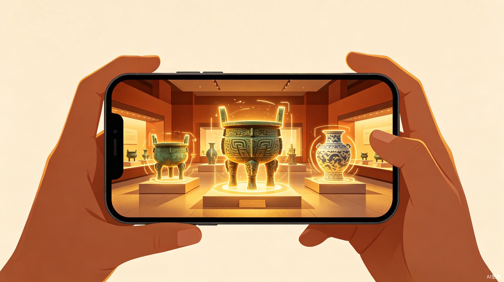

TRAE AI 创造力大赛
观博 — 通用博物馆智慧导览小程序
让每一件文物都有温度，让每一次参观都有故事
一、创意介绍
1.1 解决什么问题
中国有7046家备案博物馆，年接待观众14.9亿人次，但大多数中小型博物馆的数字化服务严重不足。现有头部馆小程序（故宫、国博等）虽功能丰富，却都是独立开发、不可复用的定制方案，开发成本动辄数十万。中小博物馆无力承担，导致观众体验参差不齐。
调研发现，68%的用户认为当前博物馆数字化体验"冰冷机械"——文物被当作展品陈列，缺乏故事化叙事和情感联结。满意度分析中，情感体验的路径系数最高（0.41），远超技术易用性（0.32）和内容深度（0.27）。市场最大的空白不是技术的炫酷，而是情感的缺失。
1.2 灵感来源
在对比国内外十余家博物馆数字应用后，我们发现：
国内优势 — AI数智人讲解（国博"艾雯雯"）、AR实景导航（故宫）、数字孪生运营（三星堆）等技术领先
国外优势 — CC0开放授权（大都会、Rijksmuseum）、社区化收藏（Rijksstudio）、长者友好设计
共同缺陷 — 叙事碎片化、情感共鸣缺失、个性化不足、各馆独立不互通
1.3 产品形态
「观博」是一款通用可配置的微信小程序，面向全国数千家博物馆提供标准化智慧导览解决方案。博物馆只需上传藏品数据和展览信息，即可快速生成专属的智慧导览小程序，无需定制开发。
二、目标用户及痛点
核心用户A：参观者
游客学生亲子专家
- 走马观花：缺乏引导，看完记不住什么
- 讲解难求：免费讲解偏基础，付费讲解良莠不齐
- 预约困难：热门馆抢票难，中小馆信息分散
- 无法回味：离馆后无法回顾学到的知识
核心用户B：博物馆运营方
馆长信息化负责人
- 预算有限：中小馆无力承担定制小程序开发
- 技术门槛：缺乏专业的技术开发团队
- 数据孤岛：藏品数字化资源分散，无法整合利用
- 运营压力：预约、导览、文创等业务缺乏统一平台
使用场景
- 行前：浏览展览信息 → 预约门票 → 制定个性化参观路线
- 馆中：AI对话式讲解 → AR扫描互动 → 实时人流导航 → 文物打卡
- 馆后：回顾参观足迹 → 分享观展笔记 → 在线购买文创 → 收藏文物知识
三、核心功能设计
AI故事化讲解
核心差异化
- 不是冰冷的信息播报，而是像"朋友讲故事"一样的对话式导览
- 分龄讲解：儿童版（趣味故事）、成人版（历史文化）、专家版（学术深度）
- 支持多轮追问，围绕用户兴趣展开深入讲解
通用配置引擎
技术核心
- 博物馆管理员后台：上传藏品数据（图片/音频/文字）即可自动生成导览内容
- 支持展览模板、楼层地图、参观路线的灵活配置
- 一次开发，千馆复用，边际成本趋近于零
个性化智能路线
体验亮点
- 根据用户兴趣标签 + 可用时间 + 实时人流推荐最优路线
- 人流热力图：实时显示各展厅拥挤程度
- 支持"必看TOP10"、"亲子专线"、"历史迷路线"等预设主题
社交化轻互动
增长引擎
- 文物打卡集章：到馆扫描展品收集电子印章
- 观展笔记分享：一键生成精美参观海报分享朋友圈
- 知识问答挑战：寓教于乐的文物知识小游戏
功能架构
flowchart TB
A[观博小程序] --> B[参观者端]
A --> C[博物馆管理端]
B --> B1[预约购票]
B --> B2[AI故事讲解]
B --> B3[智能路线导航]
B --> B4[AR互动探索]
B --> B5[社交分享]
B --> B6[文创商城]
C --> C1[藏品数据管理]
C --> C2[展览配置]
C --> C3[路线编辑]
C --> C4[数据分析看板]
B2 --> D[大模型AI引擎]
B3 --> E[实时人流系统]
B4 --> F[AR识别引擎]
四、技术实现方案
| 技术层 | 选型方案 | 说明 |
|---|
| 前端框架 | 微信小程序原生 + uni-app | 一次开发，可扩展至多端（支付宝/抖音小程序） |
| AI讲解引擎 | 接入大语言模型API | 基于藏品知识库构建RAG检索增强生成，确保讲解准确性 |
| AR互动 | 微信小程序AR框架 + 图像识别 | 扫描展品触发信息卡片/3D模型/动画，低门槛实现 |
| 后台管理 | Web端管理后台（Vue3） | 博物馆管理员可视化管理藏品、展览、路线 |
| 数据存储 | 云数据库 + 云存储 | 藏品图片/音频/3D模型托管，CDN加速分发 |
| 人流系统 | 馆内蓝牙信标 + 小程序定位 | 实时统计各展厅人数，驱动路线推荐 |
为什么用 TRAE 构建
全流程AI辅助开发：利用 TRAE Work 进行需求分析、产品设计、代码生成；利用 TRAE IDE 完成原型搭建和迭代开发。从创意到可运行Demo的全过程，最大化AI辅助效率，实现"人人都可以创造"的大赛理念。
五、差异化竞争优势
| 对比维度 | 现有博物馆小程序 | 观博（本方案） |
|---|
| 定位 | 单一馆定制开发 | 通用可配置，千馆复用 |
| 讲解方式 | 固定音频/扫码文字 | AI对话式故事讲解，支持追问 |
| 情感体验 | 冰冷机械（68%用户反馈） | 故事化叙事，有温度的导览 |
| 个性化 | 一刀切设计 | 分龄分众，兴趣驱动路线 |
| 社交互动 | 几乎没有 | 打卡集章、观展分享、知识挑战 |
| 开发成本 | 数十万/馆定制 | 配置即用，边际成本趋零 |
六、价值与意义
社会价值
- 文化普惠：让中小型博物馆也能拥有智慧导览能力，缩小数字鸿沟
- 文博传播：故事化讲解让文物"活起来"，提升公众文化素养
- 无障碍服务：适老化设计 + 多语言支持，服务更广泛群体
商业价值
- SaaS模式：基础功能免费 + 增值服务收费（AI深度讲解/AR定制/数据分析）
- 文创电商：内置文创商城，为博物馆提供增量收入渠道
- 规模化潜力：7046家博物馆 × 低客单价 = 可观的市场规模
七、实施规划
阶段一：MVP（初赛 Demo）
实现核心流程：预约 → 馆内导航 → AI讲解 → 参观路线。以1-2家虚拟博物馆数据为样例，展示完整用户体验。
阶段二：产品化（复赛）
完善管理后台配置引擎，支持博物馆自助上传数据和配置。增加AR互动、社交分享、文创商城等完整功能。
阶段三：落地推广（决赛及后续）
与2-3家真实博物馆合作试点运营，收集用户反馈迭代优化。建立SaaS运营体系，向全国博物馆推广。